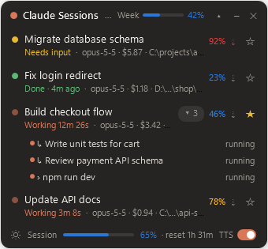
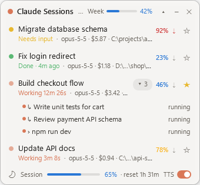

Every Claude Code session, at a glance
An always-on-top Windows overlay that shows which Claude Code sessions are working, which need your input, how full each context window is, and how much of your usage limits is left. Click a session to jump straight to it.


Features
Live session list
Working, waiting for input (permission prompts, questions) and finished-but-unseen sessions from the CLI and the Claude desktop app's Code tab. ★ favorites always stay.
Click to jump
Brings the session to the front. In the desktop app's split view, focus moves to that pane's prompt box.
Context at a glance
Context usage per session, measured against the auto-compact threshold, colored like the desktop usage meter.
Usage limits
Weekly usage in the header and the 5-hour session limit in the footer.
Background tasks
Background subagents, shells and side sessions are folded under their parent session.
Alerts
A chime and a short voice alert when a session finishes, needs input or nears compaction. Muted while locked, asleep or with the display off.
Stays out of the way
Hides behind fullscreen apps and games, minimizes to the tray, collapses to one line, starts with Windows.
Dark / light, English / Korean
Toggle the theme in the footer; pick theme and language from the header's right-click menu.
Install
- Download
ClaudeSessionOverlay.exeand run it. It is a single file; put it anywhere you like. A zip with the README and the optional mod is on the release page. - Optional: turn on Start with Windows from the tray icon's menu.
Windows SmartScreen may warn about an unsigned app the first time; choose More info → Run anyway. To build from source:
git clone https://github.com/jsuk10/claude-overlay.git
cd claude-overlay
dotnet publish app -c Release -o binHow it works
The overlay only reads local files that Claude Code and the Claude desktop app already write. It makes no network requests and never touches your credentials.
| Data | Source |
|---|---|
| Sessions and status | ~/.claude/sessions/<pid>.json |
| Model, context tokens, background tasks | ~/.claude/projects/<project>/<session>.jsonl |
| Context window, auto-compact threshold | ~/.claude/cache/model-catalog/*.json, ~/.claude/settings.json |
| Weekly and 5-hour usage | plan-usage-history.json from the Claude desktop app |
An optional bundled Claude Code mod, session-hud, adds per-session cost, usage-limit reset times and a compact button.
FAQ
How do I see how much context a Claude Code session has used?
The overlay shows a percentage next to each session, measured against the point where Claude Code auto-compacts the conversation. Blue is under 75%, yellow under 90%, red at 90% and above.
Can I see my Claude weekly and 5-hour usage limits on Windows?
Yes. The header shows weekly usage and the footer shows the 5-hour session limit, read from the Claude desktop app's local usage history.
Does it work with both the Claude Code CLI and the desktop app?
Yes. CLI sessions in any terminal and Code-tab sessions in the Claude desktop app appear in the same list.
Is there a macOS version?
Not yet. The overlay is Windows-only for now.